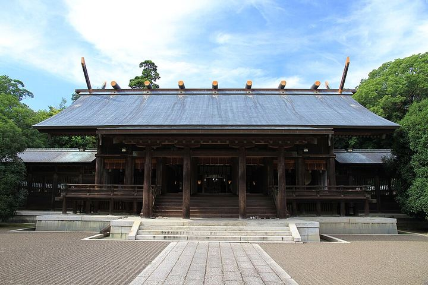

1일차 · 축제 전 시내 한 바퀴, 아오시마 노을10/29(금) · 미야자키
금요일은 축제 전날이라 토 · 일에 막힐 시내(橘通り · 신궁)를 이날 다 봐요. 이온몰은 3일차로 옮겼어요.

- 11:20전원미야자키공항 도착 · 입국작은 공항이라 30~40분이면 나와요
- 12:10운전버젯 셔틀(약 5분) → 렌터카 2대 인수 · 카시트 장착
- 12:35전원치킨난반 원조 '오구라' 본점 점심橘通東3-4-24 · 11~15시(주문 14:30까지) · 금요일 영업. 근처 평면 코인파킹(30분 100엔)에 세우고 걸어가요. 줄 서면 4+5명으로 나눠 앉기
- 13:30전원현청 녹나무 가로수 · 본관 → 橘通り · 야마카타야 산책평일이라 현청 앞뜰을 자유롭게 볼 수 있어요. 橘通り는 내일 신들의 행렬이 지나갈 바로 그 길
- 14:20전원치즈만쥬 '와라베' 사기大王町 · 9~17:30 · 일요일 휴무 · 주차 5대. 오후엔 품절이 잦아 전날 전화 예약(0985-23-2043)하면 확실 — 호스트에게 부탁하거나 번역 앱으로
- 14:45전원미야자키 신궁 참배축제 행렬이 출발하는 곳을 한산할 때 미리. 무료 주차 약 1,150대. 시간이 남으면 옆 현립박물관(무료, 화요일 휴관) 30분
- 15:35아이들헤이와다이 공원 하니와 정원 · 평화의 탑숲속 400여 개 하니와(토우) 찾기 놀이. 무료 · 주차 무료 약 300대
- 16:15운전아오시마로 (약 40분)
- 17:00전원아오시마 신사 · 도깨비 빨래판 산책다리 건너 섬 한 바퀴(1.5km, 평지). 17:28 일몰 노을이 하이라이트. 빨래판 바위는 썰물(10/29 11:33 · 10/30 12:10 · 10/31 12:45) 때 더 잘 보여요
- 18:00전원독채 체크인 · 짐 풀기
- 18:30전원맥스밸류 기바나다이점 장보기 → 독채 파티 · 자쿠지숙소에서 약 10분 · 7~24시. 회 · 고기 · 술 · 아침거리. 생선은 다음 날 아침 아오시마 어협 직판장도